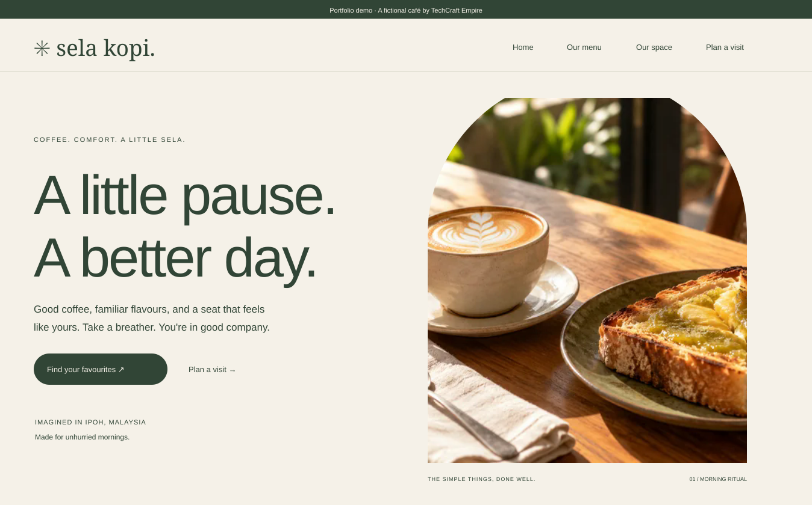
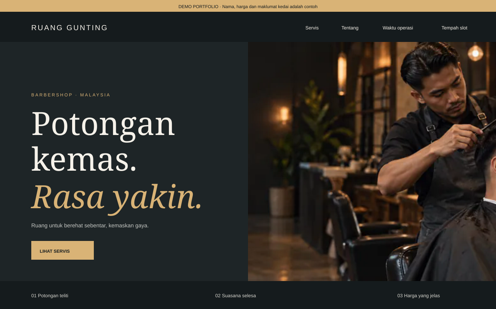

Website perniagaan
Perkenalkan jenama, servis dan maklumat penting dalam susun atur yang meyakinkan.
- Profil syarikat & servis
- Portfolio & katalog
- Paparan telefon & desktop
REKA BENTUK & PEMBANGUNAN WEB
Website yang menyusun identiti, servis dan tindakan pelanggan dalam satu pengalaman yang jelas—dibina untuk kelihatan meyakinkan pada setiap skrin.
Untuk perniagaan, penyedia servis & jenama di Malaysia.

Identiti berbeza.
Perhatian yang sama pada setiap detail.
01 / SERVIS
Dari pengenalan pertama hingga pertanyaan pelanggan, setiap halaman ada peranannya.
Perkenalkan jenama, servis dan maklumat penting dalam susun atur yang meyakinkan.
Satukan mesej utama dan tindakan pelanggan untuk produk, servis atau kempen anda.
Tambahkan fungsi yang membantu pelanggan meneroka pilihan dan membuat pertanyaan.
02 / SELECTED WORK
Setiap bisnes perlukan bahasa visual dan aliran yang berbeza. Dua konsep ini menunjukkan bagaimana pendekatan itu diterjemahkan ke web.
Pengalaman café yang hangat, dengan menu interaktif dan aliran pertanyaan tempahan.

Identiti yang tegas dengan senarai servis, harga yang jelas dan pengalaman melayari yang terus kepada tujuan.
Semua projek di atas ialah demo portfolio untuk perniagaan rekaan, bukan projek pelanggan berbayar.
03 / PENDEKATAN KAMI
Website yang baik bermula dengan memahami apa yang pelanggan anda perlukan.
Mari rancang keperluan andaWarna, tipografi dan kandungan disusun supaya jenama anda terasa konsisten.
Menu, butang dan maklumat utama direka untuk telefon, tablet dan desktop.
Halaman, fungsi dan hasil kerja dipersetujui sebelum pembangunan dimulakan.
04 / CARA KERJA
Proses yang mudah diikuti, dengan ruang untuk anda menyemak dan memberi maklum balas.
Kongsi perniagaan, sasaran pelanggan dan tujuan website anda.
Persetujui struktur, gaya visual, fungsi dan skop projek.
Semak halaman dan fungsi pada skrin besar serta telefon.
Lengkapkan semakan akhir, penerbitan dan panduan asas.
PROJEK ANDA YANG SETERUSNYA
Mulakan dengan ringkasan keperluan. Pilih jenis website dan ceritakan sedikit tentang perniagaan anda.
Ambil masa sekitar 2 minit.
Tiada bayaran atau komitmen.